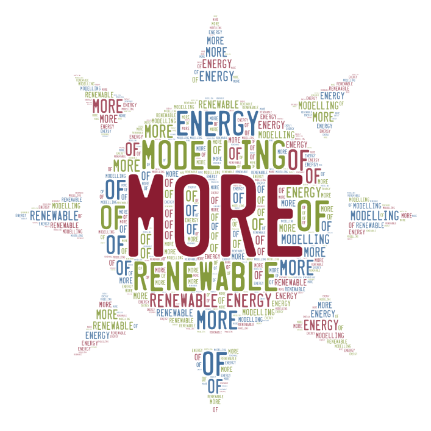

|  |
MORE – Files |
This is the overview for files and directories of the MORE software.
For an explanation of the underlying models and an example simulation
see the separate document MORE-Documentation.pdf.
General structure
The main directory contains the following files and directories.
- /moresystem This directory contains the main simulation files and additional input files.
- 01_input.txt Input describing the system.
- 02_RunSystem.bat Executable script (MS WIndows) that starts the simulation.
- 03_results.html This file is generated after successful simulation and contains the results.
- 04_errors.txt Here is the output for Python error messages. Normally, this file should be empty.
- *.png (13 files) These files are generated after successful simulation and contains results.
Input files
The code
This is an overview for the PYTHON code, generated by the tool 'pdoc'.
The program itself is started by calling the file 'myrun.py'.
(For information about the internal workflow and internal data structures see MORE-Documentation.pdf.)
Here are the modules, which need to be called from 'myrun.py'.
These files contain the functions.
- readInput.py Read input data for system simulation.
- wind.py Calculate power generated by a wind turbine. (PV power is generated by PVGIS.)
- H2system.py Calculate power for hydrogen production. Calculates energy distribution to battery, electrolyser and grid.
- consum.py Consumption of hydrogen and balance of storage.
- costs.py Calculate costs.
- plotResults.py Generate graphs of the results and export data for further postprocessing to *.csv file (if necessary).
- writeHTML.py Generate results file.
created by Uwe Reimer (Emden, Germany), July 2026 // Creative Commons license CC BY //